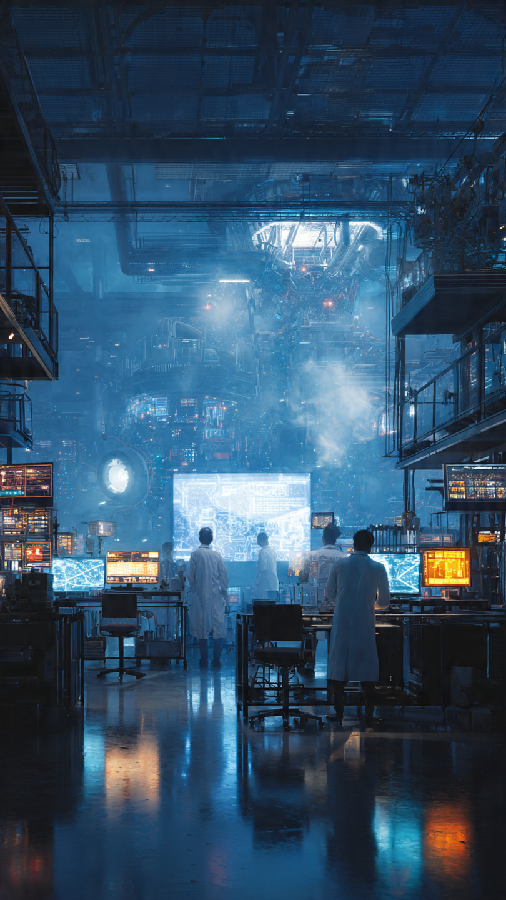
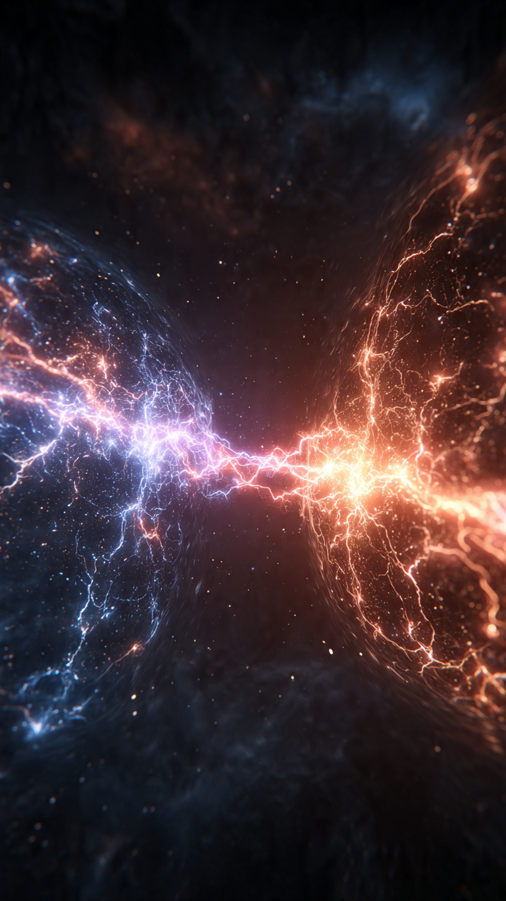

```html
اكتشاف المادة المضادة... أغرب شيء عرفه العلم | اكتشافات وعلوم
```
في عام 1928، كان معظم علماء الفيزياء يعتقدون أنهم أصبحوا يفهمون الكون أكثر من أي وقت مضى.
فقد عرفوا مكونات الذرة، واكتشفوا الإلكترون، وبدأوا يفهمون القوانين التي تحكم حركة الجسيمات الصغيرة.
بدا وكأن الصورة أصبحت شبه مكتملة.
لكن في إحدى الغرف الهادئة بجامعة كامبريدج، كان شاب بريطاني يجلس أمام أوراق مليئة بالمعادلات الرياضية.
لم يكن يجري تجربة داخل مختبر.
ولم يكن ينظر عبر تلسكوب.
بل كان يحاول حل معادلة واحدة فقط.
كان اسمه بول ديراك.
واعتبره كثيرون واحدًا من أذكى الفيزيائيين في القرن العشرين.
كان هادئًا إلى درجة أن زملاءه كانوا يصفونه بأنه يتحدث أقل مما يفكر.
لكن داخل عقله، كانت تدور أفكار غيّرت فهم الإنسان للكون.
حاول ديراك أن يجمع بين نظريتين عظيمتين.
الأولى هي ميكانيكا الكم، التي تصف عالم الجسيمات الدقيقة.
والثانية هي نظرية النسبية الخاصة لأينشتاين.
كان الجميع يعتقد أن الجمع بينهما مستحيل.
لكن بعد أشهر طويلة من الحسابات، نجح في كتابة معادلة جديدة.
وعندما انتهى منها...
لاحظ شيئًا غريبًا للغاية.
كانت المعادلة تعطي نتيجتين.
إحداهما طبيعية.
أما الثانية...
فكانت تصف جسيمًا يشبه الإلكترون تمامًا.
له الكتلة نفسها.
وله الخصائص نفسها.
لكن شحنته الكهربائية معاكسة تمامًا.
أعاد ديراك الحسابات عشرات المرات.
ظن أن هناك خطأ في الأرقام.
لكن المعادلة كانت تعطي النتيجة نفسها في كل مرة.
وكان أمامه احتمالان لا ثالث لهما.
إما أن الرياضيات كلها خاطئة...
أو أن الكون يخفي نوعًا آخر من المادة لم يره أحد من قبل.
عندما أعلن فكرته، استقبلها كثير من العلماء بالدهشة.
قال بعضهم إن هذا الجسيم مجرد خدعة رياضية.
وقال آخرون إن الطبيعة لا يمكن أن تسمح بوجود نسخة معاكسة من المادة.
لكن ديراك لم يتراجع.
كان يؤمن أن الرياضيات لا تكذب.
وأن الأيام ستكشف الحقيقة.
ولم يكن يعلم أن إثبات كلامه سيأتي بعد سنوات قليلة...
وبطريقة لم يتوقعها أحد.
📷 الصورة رقم 1

مرّت أربع سنوات، وما زالت فكرة بول ديراك تثير الجدل في الأوساط العلمية.
كان بعض الفيزيائيين يقرأون معادلته بإعجاب، بينما كان آخرون يرفضون تصديقها تمامًا.
فكيف يمكن أن يوجد جسيم يشبه الإلكترون في كل شيء، لكنه يحمل شحنة معاكسة؟
لم يكن لدى أحد أي دليل.
وكانت الفكرة تبدو وكأنها خيال رياضي أكثر منها حقيقة علمية.
وفي عام 1932، كان الفيزيائي الأمريكي كارل أندرسون يعمل على دراسة الأشعة الكونية، وهي جسيمات عالية الطاقة تصل إلى الأرض من أعماق الفضاء.
استخدم جهازًا يسمى غرفة السحاب، وهو جهاز يسمح برؤية آثار الجسيمات الدقيقة أثناء مرورها.
كان الهدف بسيطًا...
تصوير مسارات الجسيمات وتحليلها.
لكن ما ظهر أمامه في ذلك اليوم لم يكن يشبه أي شيء شاهده من قبل.
لاحظ أندرسون أثرًا رفيعًا جدًا لجسيم يتحرك داخل الجهاز.
في البداية ظن أنه إلكترون عادي.
لكن عندما درس اتجاه انحناء المسار داخل المجال المغناطيسي، اكتشف مفاجأة مذهلة.
كان الجسيم ينحني في الاتجاه المعاكس تمامًا.
أي أنه يحمل شحنة موجبة...
رغم أن كتلته مساوية تقريبًا لكتلة الإلكترون.
أعاد التجربة مرة بعد أخرى.
واستخدم أجهزة مختلفة.
وفي كل مرة، كان الجسيم الغامض يظهر من جديد.
لم يعد هناك شك.
لقد وجد أول جسيم من المادة المضادة.
وأطلق عليه اسم البوزيترون.
انتشر الخبر بسرعة بين علماء الفيزياء.
وسرعان ما تذكر الجميع معادلة بول ديراك.
فقد تنبأت بوجود هذا الجسيم قبل أربع سنوات كاملة، عندما لم يكن هناك أي دليل تجريبي عليه.
أصبحت المعادلة التي سخر منها البعض واحدة من أعظم الإنجازات في تاريخ الفيزياء.
وحصل كارل أندرسون لاحقًا على جائزة نوبل بعد أن أثبت وجود أول جسيم من المادة المضادة.
لكن السؤال الذي حيّر العلماء أكثر كان:
إذا كانت المادة المضادة موجودة فعلًا...
فماذا سيحدث لو لامست المادة العادية؟
وهل يمكن أن توجد نجوم أو كواكب كاملة مكوّنة منها؟
كانت الإجابة مدهشة...
وأخطر مما تخيل أي شخص.
📷 الصورة رقم 2

بعد اكتشاف البوزيترون، بدأت مرحلة جديدة في عالم الفيزياء.
لم يعد وجود المادة المضادة مجرد فكرة رياضية، بل أصبح حقيقة يمكن رصدها داخل المختبرات.
وسرعان ما اكتشف العلماء أن لكل جسيم تقريبًا في الطبيعة شريكًا معاكسًا له.
فالإلكترون له بوزيترون.
والبروتون له بروتون مضاد.
وحتى النيوترون له نظير مضاد.
وكأن الكون صُمم في صورة أزواج متقابلة.
لكن الأمر الأكثر غرابة ظهر عندما حاول العلماء جمع المادة العادية مع المادة المضادة.
فبمجرد أن يلتقي الجسيمان...
يختفيان تمامًا.
ولا يبقى منهما أي أثر.
لكنهما لا يختفيان دون مقابل.
بل تتحول كتلتهما بالكامل تقريبًا إلى كمية هائلة من الطاقة، وفق المعادلة الشهيرة التي وضعها ألبرت أينشتاين:
E = mc²
ولهذا السبب، تُعد المادة المضادة واحدة من أعلى مصادر الطاقة كثافةً التي عرفها الإنسان.
ورغم أن الفكرة تبدو وكأنها تنتمي إلى أفلام الخيال العلمي، فإن العلماء ينتجون كميات صغيرة جدًا من المادة المضادة داخل مسرعات الجسيمات.
لكن إنتاجها صعب للغاية.
فهي تتكوّن في أجزاء من الثانية، ثم يجب حفظها داخل حقول مغناطيسية خاصة، لأن أي ملامسة لجدار الوعاء أو لأي مادة عادية تؤدي إلى فنائها فورًا.
ولهذا السبب، تُعد المادة المضادة من أغلى المواد التي أنتجها الإنسان، إذ إن تصنيع كميات كبيرة منها غير ممكن بالتقنيات الحالية.
ومع ذلك، لم تبقَ مجرد تجربة داخل المختبرات.
فاليوم تُستخدم البوزيترونات في أجهزة التصوير الطبي الحديثة، مثل فحوصات PET Scan، التي تساعد الأطباء على اكتشاف بعض أنواع السرطان وأمراض القلب والدماغ بدقة كبيرة.
وهكذا، أصبح اكتشاف بدأ بمعادلة على ورقة سببًا في إنقاذ حياة ملايين المرضى.
لكن لا يزال هناك لغز لم يُحل حتى اليوم.
إذا كان الانفجار العظيم قد أنتج المادة والمادة المضادة بكميات متساوية...
فأين اختفت المادة المضادة؟
ولماذا يتكوّن الكون الذي نراه من المادة العادية في معظمه؟
هذا السؤال ما زال من أكبر الألغاز في الفيزياء الحديثة، ولا يزال العلماء يبحثون عن إجابته في أكبر المختبرات حول العالم.
وربما يكون حل هذا اللغز هو المفتاح لفهم السبب الحقيقي لوجودنا.
وهكذا...
بدأت القصة بمعادلة اعتقد البعض أنها مستحيلة.
ثم تحولت إلى اكتشاف أثبت أن الكون أغرب بكثير مما يتخيله الإنسان.
وأثبتت مرة أخرى أن الرياضيات ليست مجرد أرقام...
بل قد تكون نافذة يرى العلماء من خلالها أشياءً لم يكتشفها أحد بعد.